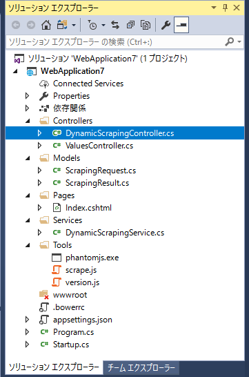
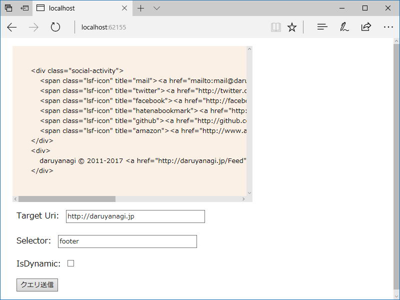
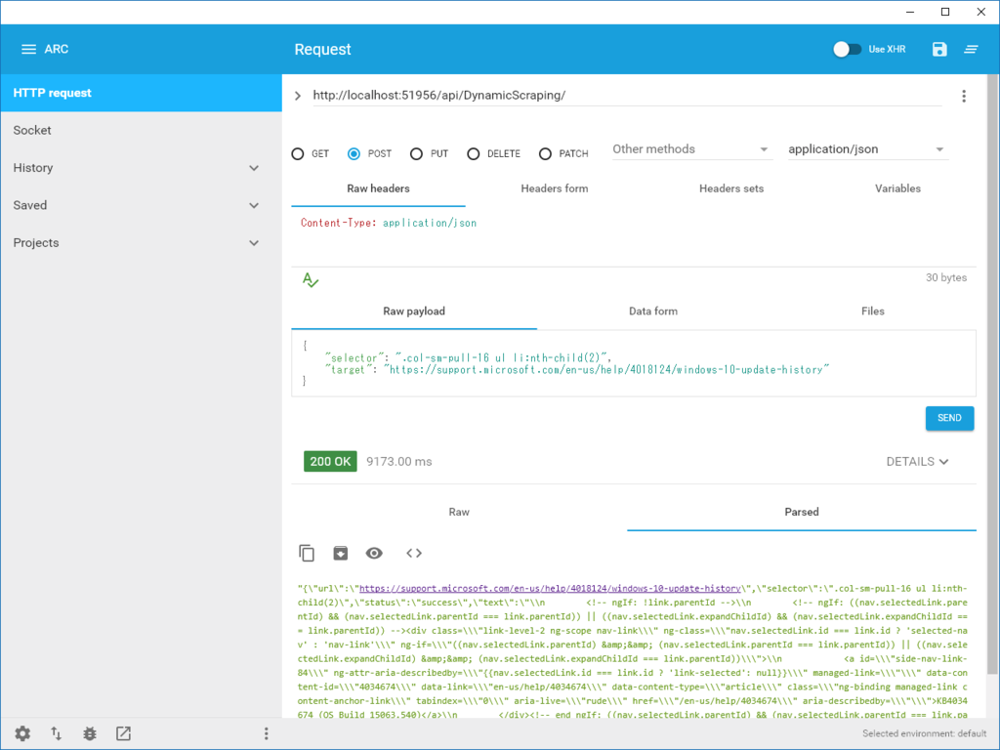

Razor Pages：PhantomJS で動的サイトをスクレイピングする（2）
公開日：
前回、AngleSharp を使えばよかったかもといったのですが、結果的にはちょっと大変かなって感じでした。
var document = default(IHtmlDocument);using (var client = new HttpClient()) using (var stream = await client.GetStreamAsync(Target)) { var parser = new HtmlParser(); document = await parser.ParseAsync(stream); }
Result = document.QuerySelector(Selector)?.InnerHtml;
return Page();
確かにシンプルなのですが、外部 JavaScript を読んで、評価して……までやりだすと、いろいろ大変な感じ*1。これまで通り PhantomJS でやった方がよさそう。
――というわけで。
今回はそっちを置いておいて、Web API として使えるようにしてみました。ASP.NET API（Core）を使うのは初めてだったんですが、今回のような単純なモノであれば一瞬でできました。
namespace WebApplication7.Controllers { [Route("api/[controller]")] public class ValuesController : Controller { // GET api/values [HttpGet] public IEnumerable<string> Get() { return new string[] { "value1", "value2" }; } } }
/api/values をゲットでたたくと、{ "value1", "value2" } が返ってくる。これと組み合わせて、API Controller を Razor Pages で呼び出して使いたいなーと、ちょっと四苦八苦していたのですが、それはちょっと筋悪だったよう。結局は、API と Razor Pages で共通のロジックをまとめて（適当に Services フォルダーにまとめました）、共有することにしました。

共有部分はこんな感じ。
// サービスと名付けたモノ（/Services） namespace WebApplication7.Services { public static class DynamicScrapingService { public static string Process(Models.ScrapingRequest request) { var root_dir = Hosting.Environment.ContentRootPath; var work_dir = System.IO.Path.Combine(root_dir, "Tools"); var script_name = "scrape.js"; var info = new System.Diagnostics.ProcessStartInfo() { Arguments = $@"""{script_name}"" ""{request?.Target}"" ""{request?.Selector}""", FileName = System.IO.Path.Combine(work_dir, "phantomjs.exe"), CreateNoWindow = true, RedirectStandardOutput = true, StandardOutputEncoding = System.Text.Encoding.UTF8, UseShellExecute = false, WorkingDirectory = work_dir, }; using (var process = new System.Diagnostics.Process() { StartInfo = info, }) { var output = string.Empty; process.OutputDataReceived += (s, a) => { output += a.Data; }; process.Start(); process.BeginOutputReadLine(); process.WaitForExit(); // エラー出力をちょん切る var r = new System.Text.RegularExpressions.Regex("{.+}"); output = r.Match(output).Value; return output; } } } } // モデル的なモノ（/Models） namespace WebApplication7.Models { public class ScrapingRequest { public Uri Target { get; set; } public string Selector { get; set; } } } namespace WebApplication7.Models { public class ScrapingResult { public string Url { get; set; } public string Selector { get; set; } public string Status { get; set; } public string Text { get; set; } } }
これを Index.cshtml では
namespace WebApplication7.Pages { public class IndexModel : PageModel { public IndexModel() { ScrapinRequest = new Models.ScrapingRequest() { Target = new Uri("https://blog.daruyanagi.jp/"), Selector = "footer", }; } public Models.ScrapingRequest ScrapinRequest { get; set; } public Models.ScrapingResult ScrapingResult { get; set; } public void OnPost() { var output = Services.DynamicScrapingService.Process(ScrapinRequest); ScrapingResult = Newtonsoft.Json.JsonConvert.DeserializeObject<Models.ScrapingResult>(output); } } }
こんな感じに呼び出します。

API Controller ではこんな感じに使ってみました。JSON で渡して、JSON で返してくれる感じ。
namespace WebApplication7.Controllers { [Route("api/[controller]")] public class DynamicScrapingController : Controller { [HttpPost] public IActionResult Index([FromBody] Models.ScrapingRequest request) { var output = Services.DynamicScrapingService.Process(request); return Json(output); } } }
テストはむかし @nakaji せんせいが教えてくれた Chrome 拡張機能を使ってみました。
大変便利なのでこれからも常用していこうと思います。

追伸
前回書き忘れたのですが、ASP.NET Core には Server.MapPath() がないみたい。
namespace WebApplication7 { public class Startup { public Startup(IConfiguration configuration) { Configuration = configuration; }public IConfiguration Configuration { get; }
// This method gets called by the runtime. Use this method to add services to the container. public void ConfigureServices(IServiceCollection services) { services.AddMvc(); }
// This method gets called by the runtime. Use this method to configure the HTTP request pipeline. public void Configure(IApplicationBuilder app, IHostingEnvironment env, ILoggerFactory loggerFactory) { app.UseMvc();
Hosting.Environment = env; } }
public static class Hosting { public static IHostingEnvironment Environment { get; set; } } }
適当に IHostingEnvironment を保存しておくようにしたのですが（Hosting.Environment.ContentRootPath でルートがわかるので、それを Path.Combine() なんかでごにょごにょする）、これがいい作法なのかどうかは自信がない。
追伸2
そのまま Azure Web Site に置けなくて泣いてる。
*1:すごく頑張ればできなくはなさそうだけど、バージョンアップで API が変わってたりでちょっと調べるのが面倒になった